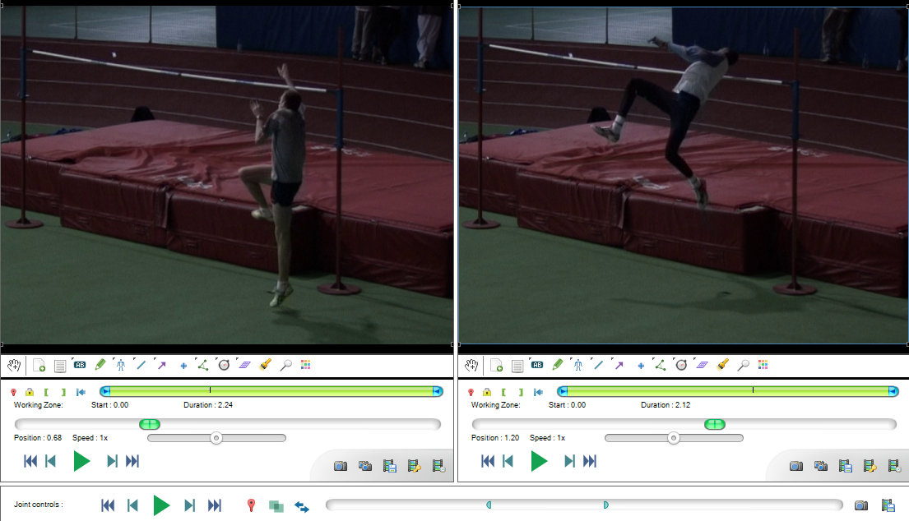
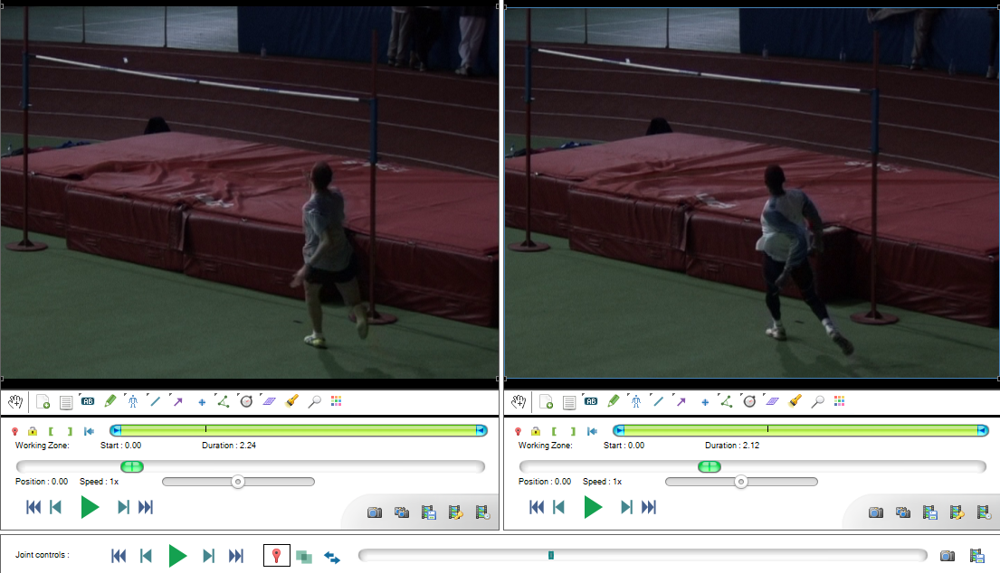
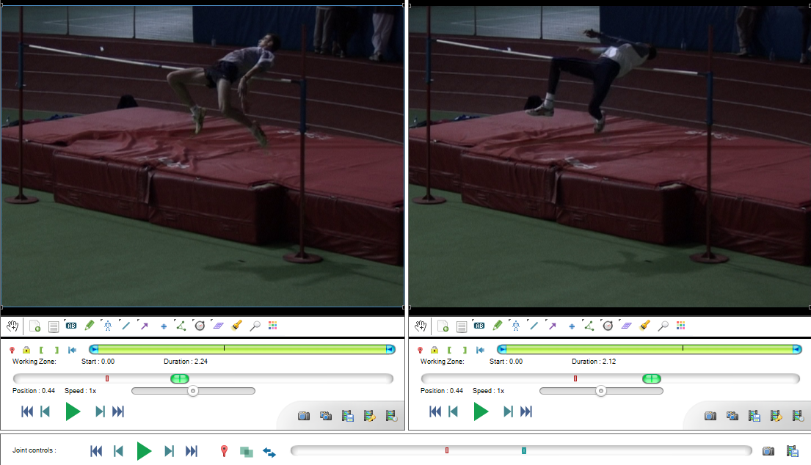
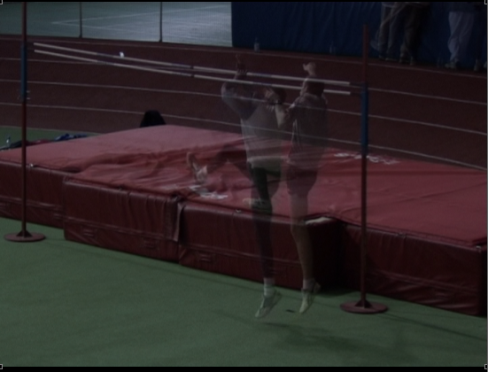

Comparison and synchronization¶
Comparison¶
Two videos can be opened side by side using the Two playback screens button or the menu .
The timeline cursor in each playback screen can be moved independently.
Synchronization mechanism¶
Two videos can be synchronized by setting their time origin to a common event visible on both videos. When the videos are synchronized they will pass through their time origin at the same time.
To set the time origin in a video move to that point in the video and click the Mark current time as time origin button or right click the background of the video and choose the menu. Alternatively you can move each video to the correct point independently and use the Synchronize videos on the current frames button in the joint controls area.
During joint-playback, the synchronization mechanism means one video may start and/or end playing before the other.
To perform joint frame-by-frame navigation, move the cursor in the joint timeline or use the joint controls buttons.
Joint controls¶
The playback controls are the same as for individual playback screens but act on both videos at the same time.
The other buttons have the following functions:
 Set the time origin in both videos to their respective current time.
Set the time origin in both videos to their respective current time.Enable or disable superposition of the videos into one another.
Swap the playback screens.
Linked speed controls¶
By default the speed controls in each playback screen are linked with each other: lowering the playback speed in one video lowers it in the other.
The speed controls are independent of the frame rate of the video files so this should apply a similar slow motion factor to both videos and keep the comparison meaningful.
Tip
If one of the video was captured with a high speed camera and has a different capture frame rate, this frame rate should be configured for this video via menu . Once this configuration is done both controls will still be coherent with each other.
If you are confident that you do not want the speed sliders to be linked together you may change the option in .
Superposition¶
Superposition paints each video on top of the other at 50% opacity. This is a basic mechanism to compare motion in-situ if the videos were filmed in the same environment with a static camera.
